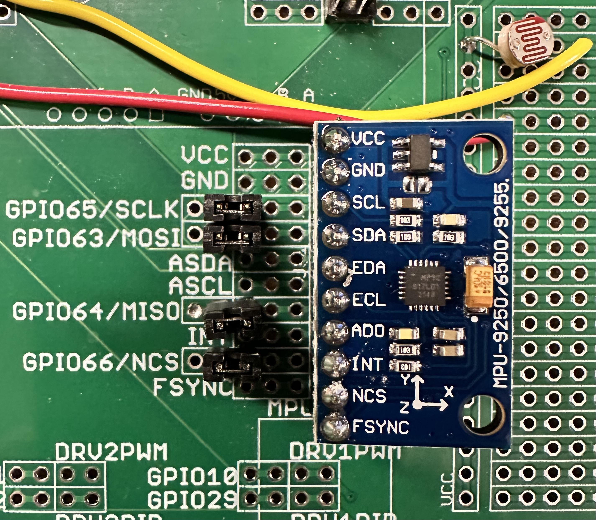

SE 423 Mechatronics
Homework Assignment #3
The Demonstration Check-Offs For Exercises 1, 2, 3, and 4 Are Due By 5PM Tuesday, March 10.
The Demo Check-Offs For Exercises 5 Is Due By 5PM Tuesday, March 24.
Remainder Due On Gradescope, by 9AM Wednesday, March 25.
Using the “Demo” board as the example, solder the needed headers for your MPU-9250 IMU connections to your breakout board. As you will see on the demo board, you need a single-row ten-pin female header, a 2x2-pin male header, and two 1x2 male headers. Once you finish exercise 3 below, I will give you your MPU-9250 IMU along with the ten-pin male header that needs to be soldered to the IMU board. At that time, I will also give you the four jumpers that are shown in the picture below.

This exercise is a continuation of the EPWM exercises in both HW2 and Lab3. Make sure to look at the code you developed for both those assignments to help you with the assignment. Use EPWM9A to play a song using the piezo buzzer on your board. In HW2 and Lab 3, we used the EPWM channels to drive a signal with a varying duty cycle and a constant carrier frequency. In this exercise, to create different notes, we will drive the buzzer with a signal that always has a 50% duty cycle, but the square wave frequency will change. Don’t forget to move the buzzer’s jumper, otherwise you won’t hear any sounds! For that reason, you will need to slightly change the default initializations of EPWM9 compared to those for EPWM12, EPWM1, and EPWM2. To produce this varying-frequency signal, we will no longer use the CMPA register. So, after you copy the initialization code for EPWM12 from HW2, change all the 12s to 9s, and then comment out your CMPA register initialization in the EPWM9 initializations. For the musical note #defines frequencies I am giving you below, CLKDIV needs to be set to 1 for a divide-by-2. Also, AQCTLA’s CAU and ZRO bits need to be changed so that CMPA is not used and a square wave is produced. What values should you set CAU and ZRO to create this square wave?
EPwm9Regs.AQCTLA.bit.CAU = ???; // What to do when CMPA is reached EPwm9Regs.AQCTLA.bit.ZRO = ???; // What to do when CNT set back to zero
When you have the PWM peripheral set up this way, you can change the TBPRD register to change the square wave frequency.
Note: Below, I am asking you to play the short “Happy Birthday” song. A longer song that also defines the array “songarray” is defined in the include file “song.h”. You are welcome to play the longer song, but if you want to cut and paste the below shorter song into your code, you will need to go to the top of your C file and comment out the line #include "song.h";.
Below is code that defines notes and an array of notes that play “Happy Birthday”. To play this song change CPU Timer 1 so that it is called every 125 milliseconds (1.0/8.0 of a second). Then inside CPU Timer 1’s ISR every time it is called, set EPWM9A’s TBPRD to the value stored at the current index in the song array. Before you exit CPU Timer 1’s ISR make sure to increment a global index variable that keeps track of where you are in the song. When you reach the length of the song (length of the array), change the mux of pin GPIO16 so that it is no longer EPWM9A and instead GPIO16. Then Set GPIO16 to low so that the buzzer does not make any random noise.
As a final step, find a simple song that you create and play it, instead of Happy Birthday. This new song needs to have at least 10 different notes.
Show this working to your TA. Also, pick a note from the #defines below and explain to your TA, with a square wave drawing, why TBPRD is set to that value to produce that note’s frequency.
#define C4NOTE ((uint16_t)(((50000000/2)/2)/261.63)) #define D4NOTE ((uint16_t)(((50000000/2)/2)/293.66)) #define E4NOTE ((uint16_t)(((50000000/2)/2)/329.63)) #define F4NOTE ((uint16_t)(((50000000/2)/2)/349.23)) #define G4NOTE ((uint16_t)(((50000000/2)/2)/392.00)) #define A4NOTE ((uint16_t)(((50000000/2)/2)/440.00)) #define B4NOTE ((uint16_t)(((50000000/2)/2)/493.88)) #define C5NOTE ((uint16_t)(((50000000/2)/2)/523.25)) #define D5NOTE ((uint16_t)(((50000000/2)/2)/587.33)) #define E5NOTE ((uint16_t)(((50000000/2)/2)/659.25)) #define F5NOTE ((uint16_t)(((50000000/2)/2)/698.46)) #define G5NOTE ((uint16_t)(((50000000/2)/2)/783.99)) #define A5NOTE ((uint16_t)(((50000000/2)/2)/880.00)) #define B5NOTE ((uint16_t)(((50000000/2)/2)/987.77)) #define F4SHARPNOTE ((uint16_t)(((50000000/2)/2)/369.99)) #define G4SHARPNOTE ((uint16_t)(((50000000/2)/2)/415.3)) #define A4FLATNOTE ((uint16_t)(((50000000/2)/2)/415.3)) #define C5SHARPNOTE ((uint16_t)(((50000000/2)/2)/554.37)) #define A5FLATNOTE ((uint16_t)(((50000000/2)/2)/830.61)) #define OFFNOTE 0 #define SONG_LENGTH 48 uint16_t songarray[SONG_LENGTH] = { E4NOTE, OFFNOTE, E4NOTE, OFFNOTE, F4SHARPNOTE, F4SHARPNOTE, F4SHARPNOTE, F4SHARPNOTE, E4NOTE, E4NOTE, E4NOTE, E4NOTE, A4NOTE, A4NOTE, A4NOTE, A4NOTE, G4SHARPNOTE, G4SHARPNOTE, G4SHARPNOTE, G4SHARPNOTE, G4SHARPNOTE, G4SHARPNOTE, G4SHARPNOTE, G4SHARPNOTE, E4NOTE, OFFNOTE, E4NOTE, OFFNOTE, F4SHARPNOTE, F4SHARPNOTE, F4SHARPNOTE, F4SHARPNOTE, E4NOTE, E4NOTE, E4NOTE, E4NOTE, B4NOTE, B4NOTE, B4NOTE, B4NOTE, A4NOTE, A4NOTE, A4NOTE, A4NOTE, A4NOTE, A4NOTE, A4NOTE, A4NOTE};
For this exercise, I would like you to set up the SPI port for sending and receiving, but you will not communicate with an actual chip. I want you to set up the SPI and then, every 1ms, in CPU timer 0’s interrupt, transmit two 16-bit words of data. Since the SPI pins will not select any chip, the transmitted data does not do anything, but it allows you to scope the four SPI pins and verify that SPIB is set up correctly. Modify the following code after cutting and pasting it into the specified locations.
Copy and Paste this shell code in to your main() function below the init_serial function calls. Fill in the ??? with the correct value by reading the SPI Condensed TechRef and its register descriptions.
GPIO_SetupPinMux(66, GPIO_MUX_CPU1, 0); // Set as GPIO66 and used as MPU-9250 SS GPIO_SetupPinOptions(66, GPIO_OUTPUT, GPIO_PUSHPULL); // Make GPIO66 an Output Pin GpioDataRegs.GPCSET.bit.GPIO66 = 1; //Initially Set GPIO66/SS High so MPU-9250 is not selected GPIO_SetupPinMux(63, GPIO_MUX_CPU1, ???); //Set GPIO63 pin to SPISIMOB GPIO_SetupPinMux(64, GPIO_MUX_CPU1, ???); //Set GPIO64 pin to SPISOMIB GPIO_SetupPinMux(65, GPIO_MUX_CPU1, ???); //Set GPIO65 pin to SPICLKB EALLOW; GpioCtrlRegs.GPBPUD.bit.GPIO63 = 0; // Enable Pull-ups on SPI PINs Recommended by TI for SPI Pins GpioCtrlRegs.GPCPUD.bit.GPIO64 = 0; GpioCtrlRegs.GPCPUD.bit.GPIO65 = 0; GpioCtrlRegs.GPBQSEL2.bit.GPIO63 = 3; // Set I/O pin to asynchronous mode recommended for SPI GpioCtrlRegs.GPCQSEL1.bit.GPIO64 = 3; // Set I/O pin to asynchronous mode recommended for SPI GpioCtrlRegs.GPCQSEL1.bit.GPIO65 = 3; // Set I/O pin to asynchronous mode recommended for SPI EDIS; // --------------------------------------------------------------------------- SpibRegs.SPICCR.bit.SPISWRESET = ???; // Put SPI in Reset SpibRegs.SPICTL.bit.CLK_PHASE = 1; //This happens to be the mode for both the DAN28027 and SpibRegs.SPICCR.bit.CLKPOLARITY = 0; //The MPU-9250, Mode 01. SpibRegs.SPICTL.bit.MASTER_SLAVE = ???; // Set to SPI Master SpibRegs.SPICCR.bit.SPICHAR = ???; // Set to transmit and receive 16 bits each write to SPITXBUF SpibRegs.SPICTL.bit.TALK = ???; // Enable transmission SpibRegs.SPIPRI.bit.FREE = 1; // Free run, continue SPI operation SpibRegs.SPICTL.bit.SPIINTENA = ???; // Disables the SPI interrupt SpibRegs.SPIBRR.bit.SPI_BIT_RATE = ???; // Set SCLK bit rate to 1 MHz so 1us period. SPI base clock is // 50MHZ. And this setting divides that base clock // to create SCLK’s period SpibRegs.SPISTS.all = 0x0000; // Clear status flags just in case they are set for some reason SpibRegs.SPIFFTX.bit.SPIRST = ???; // Pull SPI FIFO out of reset, //SPI FIFO can resume transmitting or receiving. SpibRegs.SPIFFTX.bit.SPIFFENA = ???; // Enable SPI FIFO enhancements SpibRegs.SPIFFTX.bit.TXFIFO = 0; // Write 0 to reset the FIFO pointer to zero, and hold in reset SpibRegs.SPIFFTX.bit.TXFFINTCLR = 1; // Write 1 to clear SPIFFTX[TXFFINT] flag just in case it is set SpibRegs.SPIFFRX.bit.RXFIFORESET = 0; // Write 0 to reset the FIFO pointer to zero, and hold in reset SpibRegs.SPIFFRX.bit.RXFFOVFCLR = 1; // Write 1 to clear SPIFFRX[RXFFOVF] just in case it is set SpibRegs.SPIFFRX.bit.RXFFINTCLR = ???; // Write 1 to clear SPIFFRX[RXFFINT] flag just in case it is set SpibRegs.SPIFFRX.bit.RXFFIENA = ???; // Enable the RX FIFO Interrupt. RXFFST >= RXFFIL SpibRegs.SPIFFCT.bit.TXDLY = ???; // Set the delay between transmits to 0 spi clocks. SpibRegs.SPICCR.bit.SPISWRESET = ???; // Pull the SPI out of reset SpibRegs.SPIFFTX.bit.TXFIFO = ???; // Release transmit FIFO from reset. SpibRegs.SPIFFRX.bit.RXFIFORESET = 1; // Re-enable receive FIFO operation SpibRegs.SPICTL.bit.SPIINTENA = 1; // Enables SPI interrupt. !! I do not think this is needed. Need to Test SpibRegs.SPIFFRX.bit.RXFFIL =???; // Interrupt Level to 16 words or more received into FIFO causes // an interrupt. This is just the initial setting for the register. // Will be changed below
Setup CPU Timer 0’s interrupt function to be called every 1ms. Then, inside CPU Timer 0’s interrupt function, call these three lines of code to tell the SPI to transmit two 16-bit values, and because this is an SPI serial port, two 16-bit values will be received. Whenever you transmit data in a SPI serial port, you also receive. Once two 16-bit values are received into the FIFO, the SPIB_RX_INT hardware interrupt function will be called.
// Clear GPIO66 Low to act as a Slave Select. Right now, just to scope. Later, select the MPU9250 chip GpioDataRegs.????? = ???; SpibRegs.SPIFFRX.bit.RXFFIL = 2; // Issue the SPIB_RX_INT when two values are in the RX FIFO SpibRegs.SPITXBUF = 0x4A3B; // 0x4A3B and 0xB517 have no special meaning. Wanted to send SpibRegs.SPITXBUF = 0xB517; // something so you can see the pattern on the Oscilloscope
int16_t spivalue1 = 0; int16_t spivalue2 = 0; __interrupt void SPIB_isr(void){ spivalue1 = SpibRegs.???; // Read first 16-bit value off RX FIFO. Probably is zero since no chip spivalue2 = SpibRegs.???; // Read second 16-bit value off RX FIFO. Again probably zero GpioDataRegs.???? = ???; // Set GPIO 66 high to end Slave Select. Now to Scope. //Later, deselect the MPU9250. // Later, when actually communicating with the MPU9250, do something with the data. Now do nothing. SpibRegs.SPIFFRX.bit.RXFFOVFCLR = 1; // Clear Overflow flag just in case of an overflow SpibRegs.SPIFFRX.bit.RXFFINTCLR = 1; // Clear RX FIFO Interrupt flag so next interrupt will happen PieCtrlRegs.PIEACK.all = PIEACK_GROUP6; // Acknowledge INT6 PIE interrupt }
Before you start the more prolonged Exercise 5, which has you study the registers of the MPU-9250 and write both initialization code and code that reads the gyros and accelerometers every 1ms, I want to start you out with a simpler exercise that reads only one 16-bit gyro reading. This will both verify that your MPU-9250 is working and give you a more straightforward introduction to it, rather than jumping right into the initialization of this complex IMU. Upon power-up, the MPU-9250 is ready to be read from the F28379D’s SPI serial port. In Exercise 5, we will write an initialization function that changes some of the MPU-9250’s default settings, but for this exercise, we will use the default power-on settings. So, change the following code to read the MPU-9250’s Gyro Z-axis every 1 ms. Print its value to Tera Term every 100ms. Also, make sure you scope your SPI signals SS, SCLK, MOSI, and MISO as in exercise 3.
In the exercise 3 code that you wrote, change the values being sent through the SPITXBUF register to the following: All these lines are the same, you are just changing the number being sent
GpioDataRegs.????? = ???; // Clear GPIO66 Low to select MPU9250 chip SpibRegs.SPIFFRX.bit.RXFFIL = 2; // Issue the SPIB_RX_INT when two values are in the RX FIFO SpibRegs.SPITXBUF = (0x8000 | 0x4600); // the 0x8000 set the read bit and 46 GYRO_YOUT_L SpibRegs.SPITXBUF = 0x0000; // Send 16 zeros in order that we receive the 16 GyroZ reading
You will understand this code better after several lectures on the MPU-9250, studying its datasheet, and working through exercise 5. This code tells the MPU-9250 to start reading from the GyroY’s Low byte. The reason we start reading at the Gyro Y’s Low byte is that it is the register before both the Gyro Z’s high byte and then the Gyro Z’s low byte. The goal is to read the full 16-bit value of Gyro Z in the second 16 bits received from the MPU-9250.
Inside the SPIB_isr() function you wrote for Exercise 3 you are reading spivalue1 and spivalue2. spivalue1 contains no important information, but spivalue2 now contains the “raw” gyroZ reading, which is a number between -32768 and 32767. (In exercise 5, you will see how to convert this raw reading to units of degrees per second.) Create a global int16_t variable and call it something like “gyroz_raw.” Each time in SPIB_isr() set your gyroz_raw variable to spivalue2. Also, create a global int32_t count variable that is incremented by one each time into SPIB_isr(). Use this count variable to set UARTPrint = 1 every 100ms. Print your gyroz_raw value to Tera Term every 100 ms. With your code running and printing to Tera Term, rotate your board and notice that the gyroz_raw value changes as you rotate it back and forth. Demo this and your code for check off.
For this exercise, you are going to initialize the MPU-9250 and then every 1 ms. Read its three accelerometer readings and its three gyro readings. Use the MPU-9250 Datasheet, MPU-9250 Register Reference, and especially my MPU-9250 SPI Programming Tips for the explanation on how to fill in the needed code below. You should also continue scoping the SPI signals to see if your code is working correctly.
First, finish the setupSpib() function given below by filling in the ???. Much of the code is provided to you, but you will need to add the parts described to this function. Copy this function to the bottom of your project’s C file and create a predefinition of the function at the top of your C file. Then make sure to call setupSpib() in main() after the “init_serial()” statement and before interrupts are enabled.
void setupSpib(void) //Call this function in main() somewhere after the DINT; line of code. { int16_t temp = 0; Step 1. // cut and paste all the SpibRegs initializations you found for part 3 here. // Also, do not forget to cut and paste the GPIO settings for // GPIO63, 64, 65, and 66, which are part of the SPIB setup. //-------------------------------------------------------------------------- Step 2. // perform a multiple 16-bit transfer to initialize MPU-9250 registers 0x13,0x14,0x15,0x16 // 0x17, 0x18, 0x19, 0x1A, 0x1B, 0x1C 0x1D, 0x1E, 0x1F. Use only one SS low to high for all these writes //Some code is given, most you have to fill yourself. GpioDataRegs.GPCCLEAR.bit.GPIO66 = 1; // Slave Select Low // Perform the number of needed writes to SPITXBUF to write to all 13 registers. // Remember, we are sending 16-bit transfers, so two registers at a time after the first 16-bit transfer. // To address 00x13 write 0x00 // To address 00x14 write 0x00 // To address 00x15 write 0x00 // To address 00x16 write 0x00 // To address 00x17 write 0x00 // To address 00x18 write 0x00 // To address 00x19 write 0x13 // To address 00x1A write 0x02 // To address 00x1B write 0x00 // To address 00x1C write 0x08 // To address 00x1D write 0x06 // To address 00x1E write 0x00 // To address 00x1F write 0x00 // wait for the correct number of 16-bit values to be received into the RX FIFO while(SpibRegs.SPIFFRX.bit.RXFFST !=???); GpioDataRegs.GPCSET.bit.GPIO66 = 1; // Slave Select High temp = SpibRegs.SPIRXBUF; // read the additional number of garbage receive values off the RX FIFO to clear out the RX FIFO DELAY_US(10); // Delay 10us to allow time for the MPU-2950 // to get ready for the next transfer. Step 3. // perform a multiple 16-bit transfer to initialize MPU-9250 registers 0x23,0x24,0x25,0x26 // 0x27, 0x28, 0x29. Use only one SS low to high for all these writes //Some code is given, most you have to fill yourself. GpioDataRegs.GPCCLEAR.bit.GPIO66 = 1; // Slave Select Low // Perform the number of needed writes to SPITXBUF to write to all 7 registers // To address 00x23 write 0x00 // To address 00x24 write 0x40 // To address 00x25 write 0x8C // To address 00x26 write 0x02 // To address 00x27 write 0x88 // To address 00x28 write 0x0C // To address 00x29 write 0x0A // wait for the correct number of 16-bit values to be received into the RX FIFO while(SpibRegs.SPIFFRX.bit.RXFFST !=???); GpioDataRegs.GPCSET.bit.GPIO66 = 1; // Slave Select High temp = SpibRegs.SPIRXBUF; // read the additional number of garbage receive values off the RX FIFO to clear out the RX FIFO DELAY_US(10); // Delay 10us to allow time for the MPU-2950 to get ready for the next transfer. Step 4. // perform a single 16-bit transfer to initialize MPU-9250 register 0x2A GpioDataRegs.GPCCLEAR.bit.GPIO66 = 1; // Write to address 0x2A the value 0x81 // wait for one byte to be received while(SpibRegs.SPIFFRX.bit.RXFFST !=1); GpioDataRegs.GPCSET.bit.GPIO66 = 1; temp = SpibRegs.SPIRXBUF; DELAY_US(10); // The Remainder of this code is given to you. GpioDataRegs.GPCCLEAR.bit.GPIO66 = 1; SpibRegs.SPITXBUF = (0x3800 | 0x0001); // 0x3800 while(SpibRegs.SPIFFRX.bit.RXFFST !=1); GpioDataRegs.GPCSET.bit.GPIO66 = 1; temp = SpibRegs.SPIRXBUF; DELAY_US(10); GpioDataRegs.GPCCLEAR.bit.GPIO66 = 1; SpibRegs.SPITXBUF = (0x3A00 | 0x0001); // 0x3A00 while(SpibRegs.SPIFFRX.bit.RXFFST !=1); GpioDataRegs.GPCSET.bit.GPIO66 = 1; temp = SpibRegs.SPIRXBUF; DELAY_US(10); GpioDataRegs.GPCCLEAR.bit.GPIO66 = 1; SpibRegs.SPITXBUF = (0x6400 | 0x0001); // 0x6400 while(SpibRegs.SPIFFRX.bit.RXFFST !=1); GpioDataRegs.GPCSET.bit.GPIO66 = 1; temp = SpibRegs.SPIRXBUF; DELAY_US(10); GpioDataRegs.GPCCLEAR.bit.GPIO66 = 1; SpibRegs.SPITXBUF = (0x6700 | 0x0003); // 0x6700 while(SpibRegs.SPIFFRX.bit.RXFFST !=1); GpioDataRegs.GPCSET.bit.GPIO66 = 1; temp = SpibRegs.SPIRXBUF; DELAY_US(10); GpioDataRegs.GPCCLEAR.bit.GPIO66 = 1; SpibRegs.SPITXBUF = (0x6A00 | 0x0020); // 0x6A00 while(SpibRegs.SPIFFRX.bit.RXFFST !=1); GpioDataRegs.GPCSET.bit.GPIO66 = 1; temp = SpibRegs.SPIRXBUF; DELAY_US(10); GpioDataRegs.GPCCLEAR.bit.GPIO66 = 1; SpibRegs.SPITXBUF = (0x6B00 | 0x0001); // 0x6B00 while(SpibRegs.SPIFFRX.bit.RXFFST !=1); GpioDataRegs.GPCSET.bit.GPIO66 = 1; temp = SpibRegs.SPIRXBUF; DELAY_US(10); GpioDataRegs.GPCCLEAR.bit.GPIO66 = 1; SpibRegs.SPITXBUF = (0x7500 | 0x0071); // 0x7500 while(SpibRegs.SPIFFRX.bit.RXFFST !=1); GpioDataRegs.GPCSET.bit.GPIO66 = 1; temp = SpibRegs.SPIRXBUF; DELAY_US(10); GpioDataRegs.GPCCLEAR.bit.GPIO66 = 1; SpibRegs.SPITXBUF = (0x7700 | 0x00EB); // 0x7700 while(SpibRegs.SPIFFRX.bit.RXFFST !=1); GpioDataRegs.GPCSET.bit.GPIO66 = 1; temp = SpibRegs.SPIRXBUF; DELAY_US(10); GpioDataRegs.GPCCLEAR.bit.GPIO66 = 1; SpibRegs.SPITXBUF = (0x7800 | 0x0012); // 0x7800 while(SpibRegs.SPIFFRX.bit.RXFFST !=1); GpioDataRegs.GPCSET.bit.GPIO66 = 1; temp = SpibRegs.SPIRXBUF; DELAY_US(10); GpioDataRegs.GPCCLEAR.bit.GPIO66 = 1; SpibRegs.SPITXBUF = (0x7A00 | 0x0010); // 0x7A00 while(SpibRegs.SPIFFRX.bit.RXFFST !=1); GpioDataRegs.GPCSET.bit.GPIO66 = 1; temp = SpibRegs.SPIRXBUF; DELAY_US(10); GpioDataRegs.GPCCLEAR.bit.GPIO66 = 1; SpibRegs.SPITXBUF = (0x7B00 | 0x00FA); // 0x7B00 while(SpibRegs.SPIFFRX.bit.RXFFST !=1); GpioDataRegs.GPCSET.bit.GPIO66 = 1; temp = SpibRegs.SPIRXBUF; DELAY_US(10); GpioDataRegs.GPCCLEAR.bit.GPIO66 = 1; SpibRegs.SPITXBUF = (0x7D00 | 0x0021); // 0x7D00 while(SpibRegs.SPIFFRX.bit.RXFFST !=1); GpioDataRegs.GPCSET.bit.GPIO66 = 1; temp = SpibRegs.SPIRXBUF; DELAY_US(10); GpioDataRegs.GPCCLEAR.bit.GPIO66 = 1; SpibRegs.SPITXBUF = (0x7E00 | 0x0050); // 0x7E00 while(SpibRegs.SPIFFRX.bit.RXFFST !=1); GpioDataRegs.GPCSET.bit.GPIO66 = 1; temp = SpibRegs.SPIRXBUF; DELAY_US(50); // Clear the SPIB interrupt source, just in case any of the above initializations triggered it. SpibRegs.SPIFFRX.bit.RXFFOVFCLR=1; // Clear Overflow flag SpibRegs.SPIFFRX.bit.RXFFINTCLR=1; // Clear Interrupt flag PieCtrlRegs.PIEACK.all = PIEACK_GROUP6; }
At Check off for Ex 5, answer this question. In the above initialization of the MPU-9250, you were given the values to write to certain registers. I would like you to read the Register Map document and explain how the following register assignments set up the MPU-9250. Setting CONFIG (address 0x1A) to 0x2, GYRO_CONFIG (0x1B) to 0x0, ACCEL_CONFIG (0x1C) to 0x8 and ACCEL_CONFIG2 (0x1D) to 0x6.
After studying the MPU-9250 SPI Programming Tips and its example code, write the following code to read the MPU9250. Every 1ms inside your CPU Timer 0 interrupt function, transmit the correct 16-bit values and the correct number of 16-bit values to the MPU-9250 so that it will transmit back the three accelerometer readings and the three gyro readings. I am going to leave reading and processing the magnetometer readings as a possible final project for the class, so we will not worry about them for this lab. Make sure to set SpibRegs.SPIFFRX.bit.RXFFIL to the correct value so that the SPIB interrupt function will be called when the SPI transmission from the master to the slave and also from the slave to the master is complete. Remember, these transmissions happen at the same time.
Inside the SPIB interrupt function, make sure to pull Slave Select high. Then read the three accelerometer and three gyro integer readings. To read these three 16-bit accelerometer readings and the three 16-bit gyro readings in one chip select cycle, you should notice that you also have to read the 16-bit temperature reading, which falls in between. Scale the accelerometer readings to units of g. Remember that the initialization sets the accelerometer range to -4 g to 4 g. Also, scale the gyro readings to degrees per second. The initialization chose the range of -250 to 250 degrees per second. Print these six sensor readings to Tera Term every 200ms. Demo to your TA. With your IMU readings, you will probably see that the resting values of the accelerometer are not at zero and possibly saturated at 4g or -4g. The initial offset value needs to be adjusted to bring the accelerometer axis out of saturation and into operational range. Look at the register map for XA_OFFS, YA_OFFS, and ZA_OFFS and notice that these are 15-bit offsets that allow for an integer offset between -16384 and 16383. As a first exercise, show your TA that the default offsets set to the IMU in the given setupSpib() function are XA offset equal to -2679, YA offset equal to 2173, and ZA offset equal to 4264. These offsets were for an MPU-9250 sensor I worked with. Each sensor board has different offsets, more than likely due to how these cheap boards were soldered. So as a first step, zero all three of these offsets in your setupSpib() settings. Run your code and see what offsets your sensor board shows. Then adjust these offsets so that each accelerometer axis’s resting value is close to zero. Looking at the description of these offset registers, note that each step of this 15-bit offset value is 0.00098g. Demo to your TA.
This homework problem is the start of a homework problem that will continue to build in the remaining homework sets. The goal of this homework problem and the continuing homework problems is to start you early thinking about the states the robot will have when autonomously navigating the final project course at the end of the semester. There is definitely not one answer for these state transition diagrams. In addition, the answer you come up with in these homework assignments may not work when you start implementing the code on the actual robot. Issues with the real robot may lead you to change your ideas about how to define the system’s states. Your state transitions look very good, but then you find out they do not work too well on the actual robot. That is ok, because you will be ahead of the game in your thoughts on how to program the robot for the desired tasks.
Grading of these homework problems will be more lenient, but I am looking for some good thought. I want your answers written out very neatly so I can read all parts of the diagram and code. Do not give me garbage! Also study the State Machine lecture handout at http://coecsl.ece.illinois.edu/se423/lecturenotes/KuriStateMachineExample.pdf
So, to start, I want you to create a state transition diagram and pseudocode (with switch case structure) with only three (you can use more if you wish) states:
The pseudocode does not include all the programming details for making the robot go to an X, Y point, follow the right wall, or follow a bright pink color. When you are coming up with the pseudocode, think of a function that needs to be called every 1 millisecond to drive the robot to an X, Y point, or to follow the right wall or the pink. Every millisecond, your pseudocode should call this function, and every millisecond, there should be if statements that make the decision what state should be run the next millisecond, whether it should be the same state currently being performed or if a new state should be performed the next millisecond. In other words, the pseudocode is at a high level, focusing on the decisions that need to be made rather than the details of how to make the robot perform tasks. As you are thinking about this state transition diagram and pseudocode, if any senses are missing or issues you think will arise, note them in the notes section. In the next homework assignment, I added some sensing and other features to address those issues. Also, it will be essential for you to keep the solution you hand in, because you will be adding to this diagram and pseudocode in the upcoming homework sets.
Make sure that you comment you code and put your initials in your Gradescope submission! See https://marius-juston.github.io/SE-423---Class-Material/Homeworks/commenting_code_example.pdf for how we expect the code to be commented like!